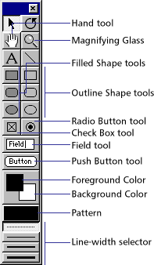

Using Director > Vector Shapes and Bitmaps > Using shapes
Using Director > Vector Shapes and Bitmaps > Using shapes |
Using shapes
Shape cast members are the same non-anti-aliased shapes that were available in older versions of Director. Similar to vector shapes, they are very memory efficient.
Shapes are images you can create directly on the Stage with the Line, Rectangle, Rounded Rectangle, and Ellipse tools on the Tool palette. You can fill shapes with a color, pattern, or custom tile. Shapes require even less memory than vector shapes, but Director does not anti-alias shapes, so they don't appear as smooth on the Stage as vector shapes. Use shapes for creating simple graphics and backgrounds when you want to keep your movie as small as possible. Shapes are especially useful for filling an area with a custom tile to create an interesting background that downloads quickly from the Internet. See Creating a custom tile.
The Radio Button, Check Box, and Button tools in the Tool palette work create simple buttons. These buttons do not do anything unless you attach a behavior or Lingo script to them.
To create a shape:
1 |
Select a frame in the Score where you want to draw a shape. |
2 |
Choose color, line thickness, and pattern settings with the controls in the Tool palette. (To open the Tool palette, choose Window > Tool Palette.) |
3 |
Click a tool and then drag on the Stage to draw the shape. |
The new shape appears on the Stage and in the Cast window.
 |
|
Use the Field button to create field cast members directly on the Stage. Use the Push Button tool to create push button cast members directly on the Stage.
To specify a shape's type with Lingo:
Set the shapeType cast member property. See shapeType.